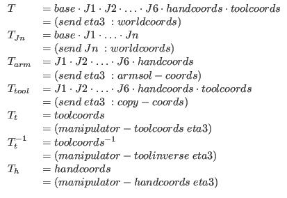

Next: MARS: マルチ自律ロボットシミュレータ Up: マニピュレータ Previous: 関節のモデル Contents Index
マニピュレータモデルはクラスmanipulatorによって記述される。 マニピュレータモデルを作成するには、 次のdefmanipulatorマクロを用いる。
:super body
:slots (axis offset high-limit low-limit)
:super cascaded-coords
:slots (base baseinverse joint angles right-handed hand handcoords
right-finger left-finger openvec max-span
toolcoords toolinverse armsolcoords toolinverse armsocoords
approach grasp affix)
:newcoords newrot &optional newpos [メソッド]
manipulatorオブジェクトは、 base、joints(J1...J6)、handcoords、toolcoords の座標系の繋がりを管理する。 manipulatorクラスは、cascaded-coordsのサブクラスであり、 やはり、cascaded-coords(またはbodyなどのサブクラス) であるbaseに結合され、 baseからtoolcoords(手先座標系)への変換を管理している。 したがって、manipulatorオブジェクトに対して送られる :translate、:locate、:rotate、:orient、:transform などのメッセージは、手先点に対して作用する。 そのとき同時にWRTパラメータを指定すれば、 手先はWRT座標系に対して動く。 次のプログラムでは、eta3をmanipulatorのインスタンスと仮定している。
(send eta3 :translate #f(0 0 -100)) ;手先を10cm引っ込める
(send eta3 :translate #f(0 0 -100) :world) ;10cm下げる
(send eta3 :translate #f(0 0 -100)
(manipulator-base eta3)) ;手先をベース座標系で10cm下げる
これらのメッセージに対して、manipulatorはアーム解を計算して6つの 関節角度を決定する。 一般に解は複数存在するが、right-handed(右手系、左手系) の区別、および現在の関節角度との連続性により適当な解が選択される。 しかし、指定された位置、姿勢に対する解が存在しない場合や関節角が 限界を越える場合は移動、回転は起こらず、警告が発せられる。
アーム解の計算は、実際のマニピュレータに対応した 個々のmanipulatorクラスに定義された:armsolメソッドが行う。 マニピュレータがワールド座標系のどこに置かれてもよいように、 また、どのような工具を用いてもよいように、アーム解は、 base、toolcoordsとは独立に、base座標系中でのハンドの位置、姿勢に 対して与えられる。
base、J1、J2、...、handcoords、toolcoordsの関係を図20
に示す。
ワールドから手先への変換を とすると、
とすると、 および各部分変換は次のようにし
て得られる。
および各部分変換は次のようにし
て得られる。

ここで、 はワールド座標系から工具座標系まで変換する。
はワールド座標系から工具座標系まで変換する。
各関節は、Brepで表現された幾何モデルを保持している。しかし、頂点の座標、 平面の方程式は常に現状を反映しているとは限らない。マニピュレータに対する 移動、回転などのメッセージでは座標系の更新だけを行い、頂点の座標は変化し ない。これは、移動、回転が複数回続けて起こった場合の計算量を減らすためで ある。更新は、マニピュレータに:worldcoordsメッセージを送る ことで引き起こされる。
マニピュレータは、手先座標系で動作を指定することを主な目的としている。 関節角による指定には :config を用いる。 引き数には6要素の列を与える。
(send eta3 :config (float-vector pi/2 pi/2 0 1 0 1))
:configは、各関節角度が可動範囲に収まっていることを検査した後、 それらを回転させる。 この結果、マニピュレータの管理している座標系と 関節角度から定まる実際の手先の位置姿勢とが一致しなくなる。 両者を一致させるためには、:set-coordsメッセージを送る。 :set-coordsは、関節角度から順方向のキネマティクスを計算し、 最終的な手先座標系に対してさらにアーム解を解く。
例 ETA3のモデル生成とその描画
EusLisp 7.27 with Xlib created on Thu Sep 17 14:33:30 1992 (load "view.l") ;ウィンドウを開く (load "/usr/local/eus/robot/eta3/eta3build.l") ;ETA3のモデルを生成する (send *viewing* :look #f(2000 2000 2000)) ;視点を変える (send-all (eta3arm-components eta3) :color 1) ;物体の線の色を黒に変える (send eta3 :config (float-vector 0 (/ -Pi 4.0) Pi/2 0 (/ -Pi 4.0) 0 )) ;ETA3を関節角度の指定で動かす (send eta3 :set-coords) ;上記参照 (draw eta3) ;ETA3を描画する
2016-03-23